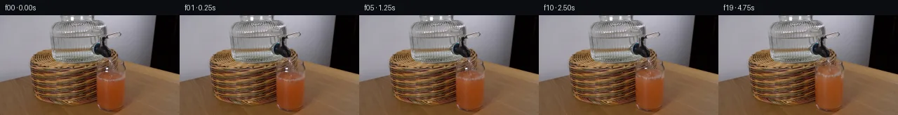

![首帧]()

Round 00
2026-11-05T19:32:02.622158+00:00像素候选变化代码 +259/−0inspection 更新
pixels b771ee8f43020983 · code 2794a872cf9029ae
查看本轮 generate.py 真实 diff
--- previous/generate.py
+++ current/generate.py
@@ -0,0 +1,259 @@
+"""Photographic pixel continuation with localized warps and analytic water optics.
+No external assets, model, simulator or rendering engine is used.
+"""
+from pathlib import Path
+import base64
+import json
+import re
+import hashlib
+import numpy as np
+from PIL import Image, ImageDraw
+from scipy.ndimage import map_coordinates, gaussian_filter
+from artifact_io import save
+
+ROOT = Path(__file__).resolve().parent
+H, W = 144, 256
+SOURCE = np.asarray(Image.open(ROOT / 'first_frame.png').convert('RGB'), dtype=np.uint8)
+BASE = SOURCE.astype(np.float64)
+Y, X = np.mgrid[0:H, 0:W].astype(np.float64)
+FPS = 4
+SUPERSAMPLE = 4
+
+def smoothstep(a, b, v):
+ z = np.clip((v-a)/(b-a), 0.0, 1.0)
+ return z*z*(3-2*z)
+
+def sample(src, xx, yy):
+ return np.stack([map_coordinates(src[..., c], [yy, xx], order=1,
+ mode='nearest', prefilter=False) for c in range(3)], axis=-1)
+
+def over(frame, color, alpha):
+ return frame * (1-alpha[..., None]) + color * alpha[..., None]
+
+def volume_rise(t):
+ # Integrate a valve-opening transient and a slight falling-head reduction.
+ # d(height)/dt = 2.32*(1-exp(-t/.24)) - .021*t.
+ return 2.32*(t-.24*(1-np.exp(-t/.24))) - .0105*t*t
+
+GLASS_X = 157.7
+GLASS_RADIUS = 17.0
+SURFACE_Y = 87.4
+SURFACE_RY = 5.9
+u = (X-GLASS_X)/GLASS_RADIUS
+back_surface = SURFACE_Y - SURFACE_RY*np.sqrt(np.maximum(0, 1-u*u))
+# Leave wall edge highlights and the heavy glass base in their source positions.
+wall_mask = (smoothstep(139.8, 142.1, X) *
+ (1-smoothstep(173.3,175.2,X)) *
+ (1-smoothstep(132.3,136.1,Y)))
+reservoir_low = gaussian_filter(BASE, sigma=(.3,.65,0))
+# A 4x sampling grid is used only for water optics, not for the whole photograph.
+SY, SX = np.mgrid[0:H*SUPERSAMPLE,0:W*SUPERSAMPLE].astype(np.float64)
+SX = (SX+.5)/SUPERSAMPLE-.5
+SY = (SY+.5)/SUPERSAMPLE-.5
+
+def down(a):
+ if a.ndim == 2:
+ return a.reshape(H,SUPERSAMPLE,W,SUPERSAMPLE).mean(axis=(1,3))
+ return a.reshape(H,SUPERSAMPLE,W,SUPERSAMPLE,3).mean(axis=(1,3))
+
+def water_overlay(frame, t, rise):
+ flow = 1-np.exp(-t/.24)
+ cy = SURFACE_Y-rise
+ z = SY-60.2
+ xc = (153.4+.035*np.maximum(z,0) +
+ .105*np.sin(12*t-.56*z)*np.clip(z/6,0,1))
+ radius = (.55+.22*np.exp(-np.maximum(z,0)/9))*np.sqrt(flow)
+ radius *= 1+.045*np.sin(.86*z-30*t)
+ dx = SX-xc
+ axial = smoothstep(59.9,60.65,SY)*(1-smoothstep(cy-.15,cy+.65,SY))
+ core = (1-smoothstep(radius-.14,radius+.12,np.abs(dx)))*axial
+ # The inner jet displaces the photograph through clear curved water.
+ # Each antialiased pixel accumulates refracted samples and narrow highlights.
+ refraction = .52*np.sin(np.clip(dx/(radius+.001),-1,1)*2.1)
+ refracted = sample(frame, SX+refraction, SY+.12*np.sin(z*.8-t*18))
+ rim_front = 1-.30*np.exp(-((SY-70.1)/.60)**2)
+ center_alpha = .40*core*rim_front
+ edge_left = np.exp(-((dx+.64*radius)/.19)**2)*axial*rim_front
+ edge_right = np.exp(-((dx-.77*radius)/.18)**2)*axial*rim_front
+ glint = .70+.22*np.sin(1.17*z-25*t)
+ total_alpha = np.clip(center_alpha+.44*edge_left+.22*edge_right,0,.85)
+ target_sum = (refracted*center_alpha[...,None] +
+ np.array([211.,211.,203.])* (.44*edge_left*glint)[...,None] +
+ np.array([65.,67.,67.])*(.22*edge_right)[...,None])
+ # Normalize separate light/shade contributions before area averaging.
+ actual_a = center_alpha+.44*edge_left*glint+.22*edge_right
+ target_sum *= (total_alpha/(actual_a+1e-12))[...,None]
+ native_a = down(total_alpha)
+ native_premul = down(target_sum)
… diff truncated; 172 more lines …